Engineering contributions across propulsion programmes, covering internal-flow CFD, thermal assessment, structural FEA, fluid–structure interaction and test-data interpretation. Project descriptions are kept at a non-proprietary level.
Propulsion CFDThermal / CHTLinear & Nonlinear FEAFSITest Data Analysis
ENGINEER II · JANUARY 2026 – PRESENT
IG Defence — Inventgrid India Pvt. Ltd.
Noida, India
Work across propulsion performance, computational flow analysis and structural integrity assessment. My contribution is presented by engineering discipline so that the methods, calculations and outputs are clear without disclosing proprietary geometry or restricted operating conditions.
JWALA is a counter-UAS (CUAS) programme involving guided interceptor development and a seeker-based system. My contribution spans propulsion calculations, CFD, thermal assessment, structural FEA and fluid–structure interaction.
PROPULSION
Performance calculations
Supported propulsion-performance assessment through interpretation of thrust-time behaviour and related calculated outputs. These results help the team review propulsion performance against programme-level requirements and decide where further development or testing is needed.
CFD
Compressible internal-flow analysis
For compressible-flow cases, used a density-based formulation and second-order spatial discretization, with SST k–ω turbulence modelling where applied. Reviewed Mach number, static pressure, velocity and temperature distributions to identify flow behaviour and provide evidence for propulsion/nozzle design reviews.
THERMAL
Thermal assessment
Evaluated temperature distribution and heat-transfer behaviour in propulsion-related components. Where conjugate heat transfer is modelled, fluid-side energy transport and solid conduction are coupled to assess wall temperatures, heat flux and thermally critical regions for material and thermal-design review.
STRUCTURAL FEA
Structural integrity
Performed linear and nonlinear structural assessments, reviewing equivalent/principal stress, deformation, strain and contact response as applicable. Identified critical locations and load paths so the design team can assess local reinforcement, geometry changes or other mitigation options.
FSI
Fluid–structure interaction
Used a Fluent–Transient Structural workflow through System Coupling for coupled assessment. The transferred fluid loads and structural response help evaluate component behaviour under flow-induced loading and support design verification.
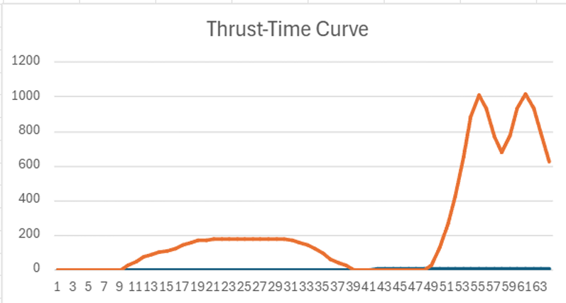
JWALA — thrust–time profile. Programme propulsion result; source image does not identify axis units or test conditions.
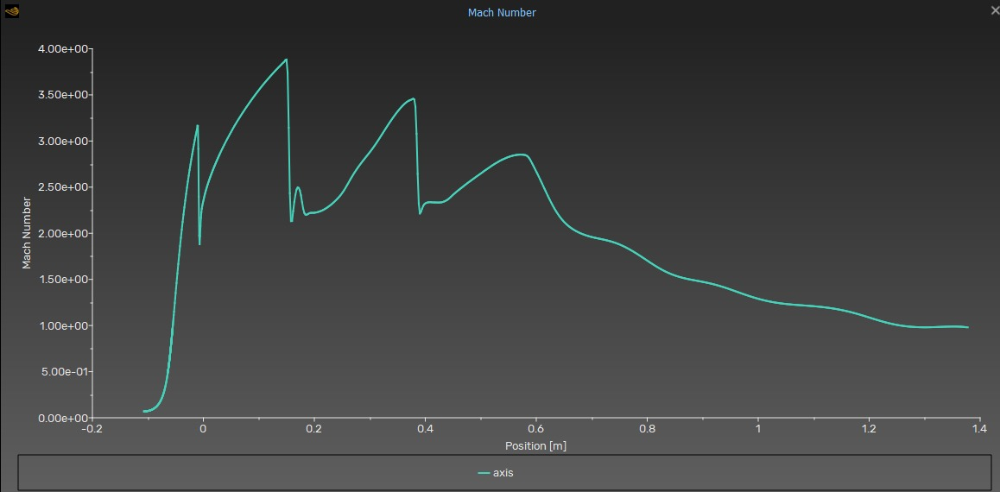
Axial Mach-number profile. Mach-number variation along the flow axis; the supplied plot reaches approximately 3.9.
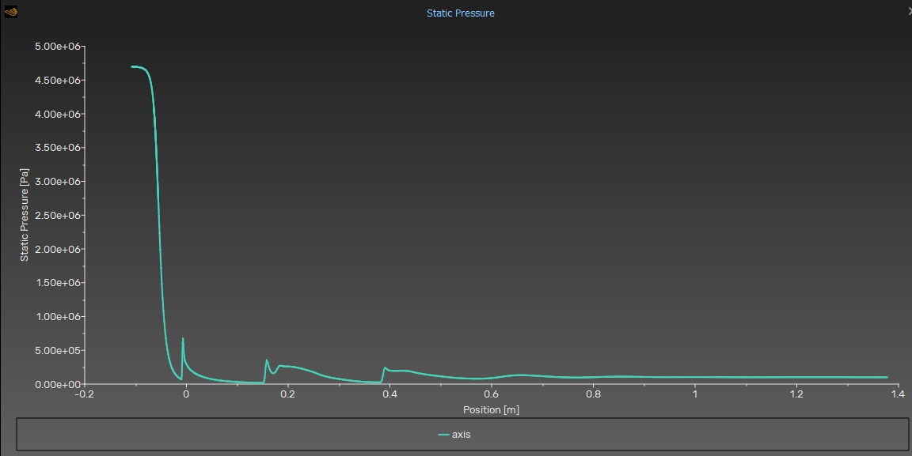
Axial static-pressure profile. Pressure variation along the flow axis; source plot uses pascals.
Engineering outputDelivered interpreted flow-field and structural-response results, identified regions requiring engineering attention, and provided analysis-based inputs to support design review, verification and decisions on the next development or test iteration.
02 / ROCKET-ASSISTED TAKE-OFF
KAL RATO Booster
Propulsion calculations · CFD · Structural FEA · Thermal Assessment · Test Data
250 kg-class system context3 seconds assessment window
Post-processed KAL test data and estimated required RATO thrust and impulse for a 250 kg-class system. The performance study considered rail inclinations of 15°–20° and target speeds of 160–190 km/h.
PROPULSION CALCULATIONS
Thrust and impulse
Processed measured thrust histories, integrated the useful first-three-second interval and compared D1/D3 impulse with the supplied nominal requirement.
CFD
Nozzle flow field
Reviewed velocity magnitude and vector fields to interpret the computed internal/nozzle flow solution and downstream flow development.
STRUCTURAL FEA
Motor and test hardware
Linear and nonlinear structural assessment, including stress, total deformation and contact-related response in motor-related components and test infrastructure.
THERMAL
Thermal response
Thermal assessment of propulsion hardware, considering temperature distribution, heat-transfer paths and thermally induced component response. For coupled fluid–solid thermal cases, CHT outputs help identify wall-temperature and heat-flux trends for thermal-design review.
Numerical approach: compressible-flow cases use an appropriate density-based setup, second-order spatial discretization and a turbulence closure suited to the case (including SST k–ω where applied). Structural work covers linear/nonlinear response and contact behaviour as applicable. The outputs are interpreted for performance, thermal margins, stress concentrations and design-team follow-up.
Nominal impulse requirement · 0–3 s14,040.189N·s
D1 measured impulse · 0–3 s14,571.429N·s
D3 measured impulse · 0–3 s14,339.812N·s
Assessment interval3.0seconds
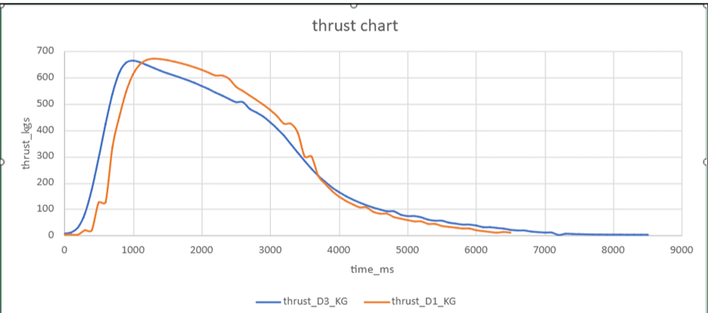
KAL RATO — measured thrust–time histories (D1 and D3). The original channel label is retained; the source plot labels the vertical axis as thrust_kgs. No unit conversion is applied.
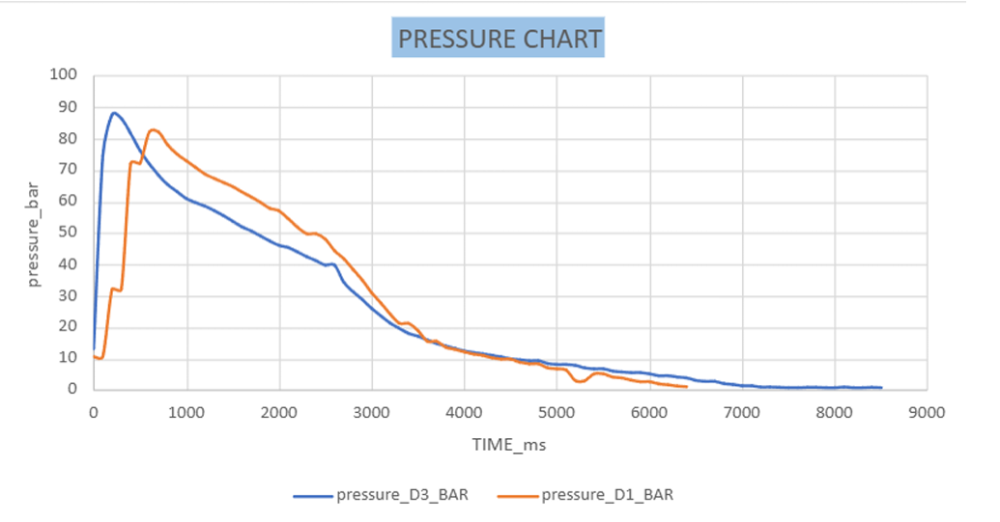
KAL RATO — pressure–time histories. Pressure in bar and time in milliseconds, as labelled in the source plot.
PROPULSION PERFORMANCE OUTPUT
Both tests exceeded the supplied nominal 3-second impulse requirement.
D1 delivered approximately 3.78% above the requirement; D3 delivered approximately 2.13% above it, based on the supplied calculations.
Requirement
14,040
D1
14,571
D3
14,340
Engineering outputProduced a D1/D3 comparison based on measured histories and the stated first-three-second impulse criterion. The result supports the nominal impulse check only; final launch suitability remains subject to validated raw data and applicable system-level acceptance criteria.
03 / CONSOLIDATED TECHNICAL FIGURES
Engineering analysis gallery
A single collection of selected CFD, thermal, structural and coupled-analysis contours from the work described above. Project time-history and axial-profile graphs remain with their respective project case studies.
CFD & thermal field results
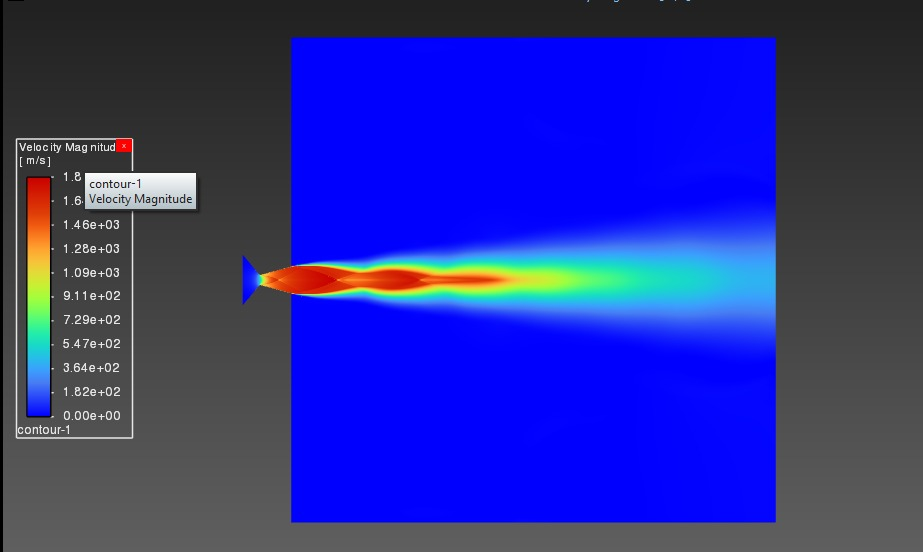
Velocity magnitude fieldFlow-field contour; velocity scale shown in m/s.
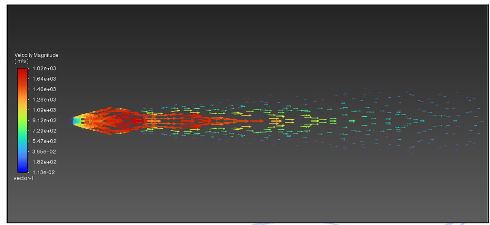
Velocity vectorsFlow direction and spatial velocity distribution.
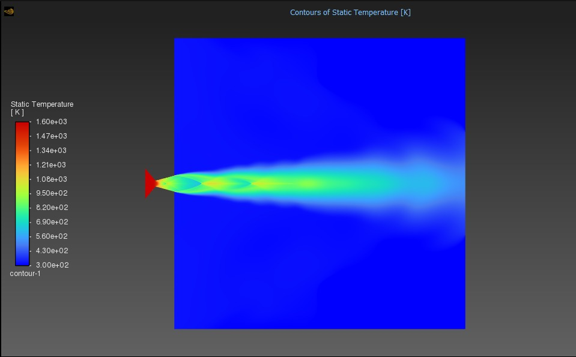
Static temperature contourTemperature field shown in kelvin; displayed scale approximately 300–1,600 K.
Structural response & fluid–structure interaction
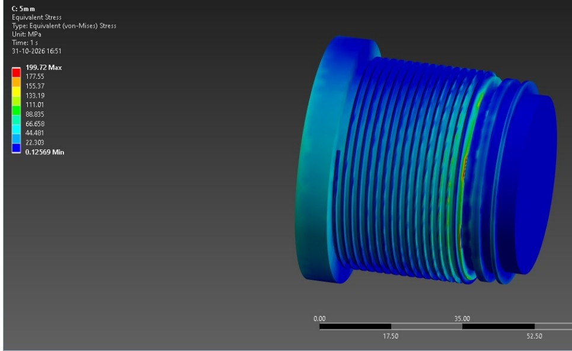
Threaded motor bulkhead — equivalent stressMaximum displayed von Mises stress: 199.72 MPa.
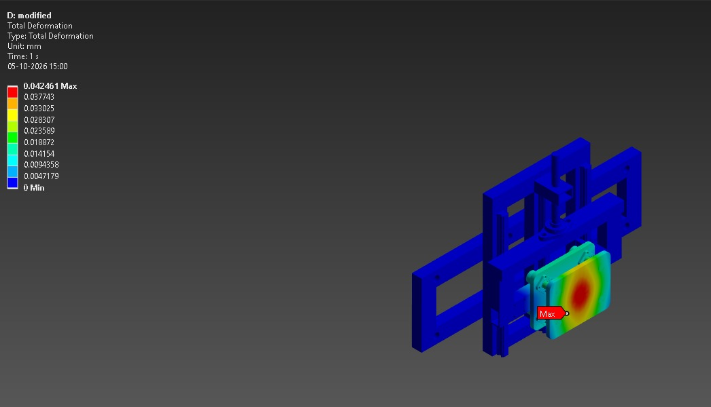
Test infrastructure — total deformationMaximum displayed deformation: 0.042461 mm.
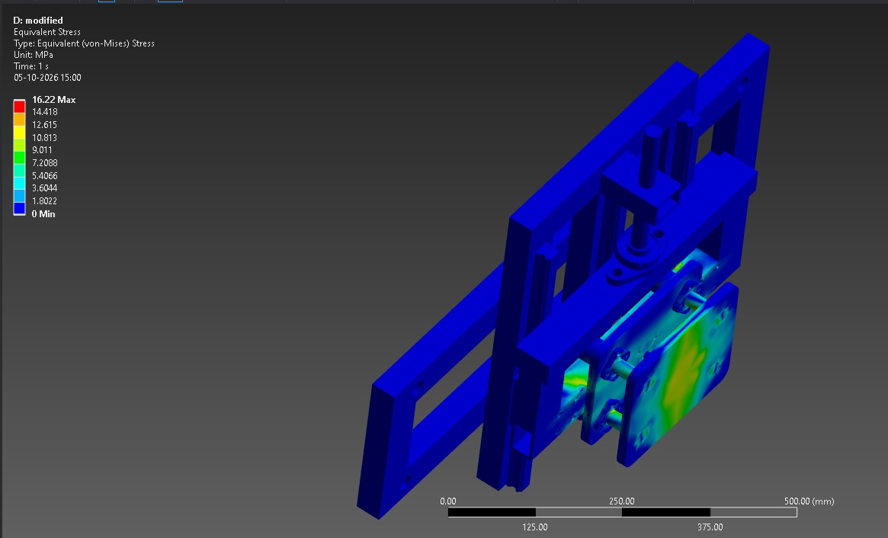
Test infrastructure — equivalent stressMaximum displayed von Mises stress: 16.22 MPa.
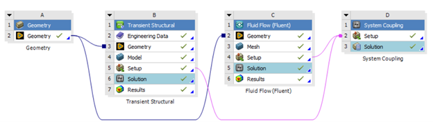
Fluid–structure coupling workflowFluent + Transient Structural connected through System Coupling.
Contour extrema are transcribed from the supplied screenshots. They are not standalone pass/fail conclusions. Material allowables, load cases, constraints, contact definitions, mesh verification, solver convergence and acceptance criteria are needed for a defensible structural assessment.